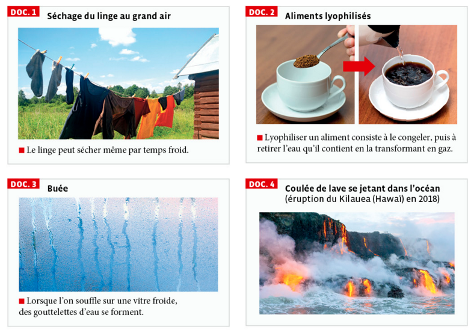
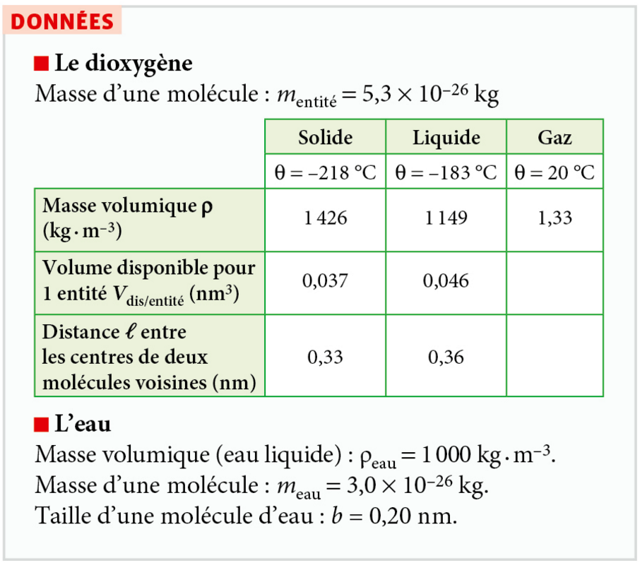
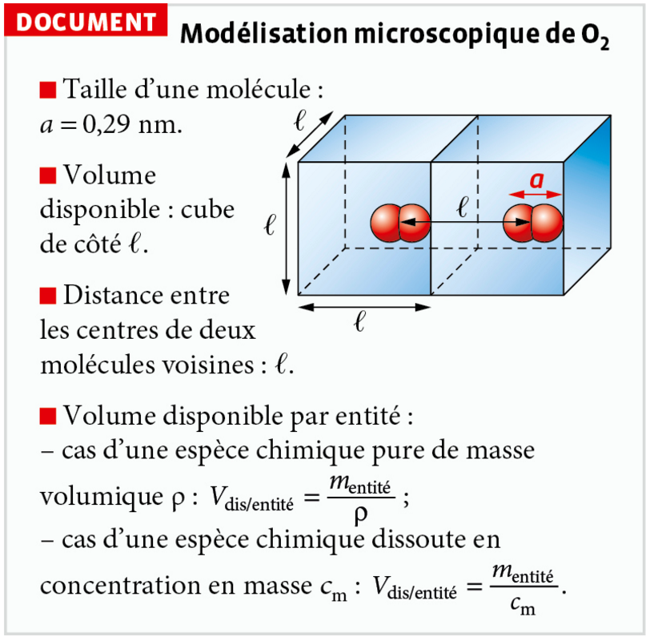
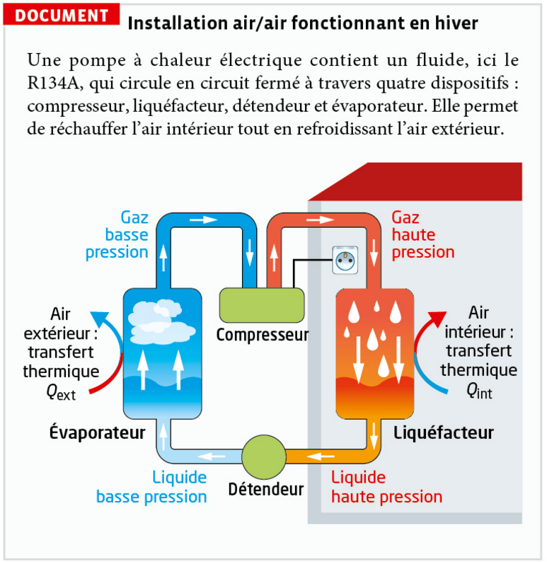
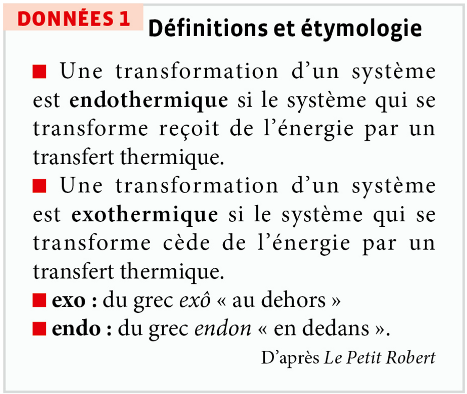
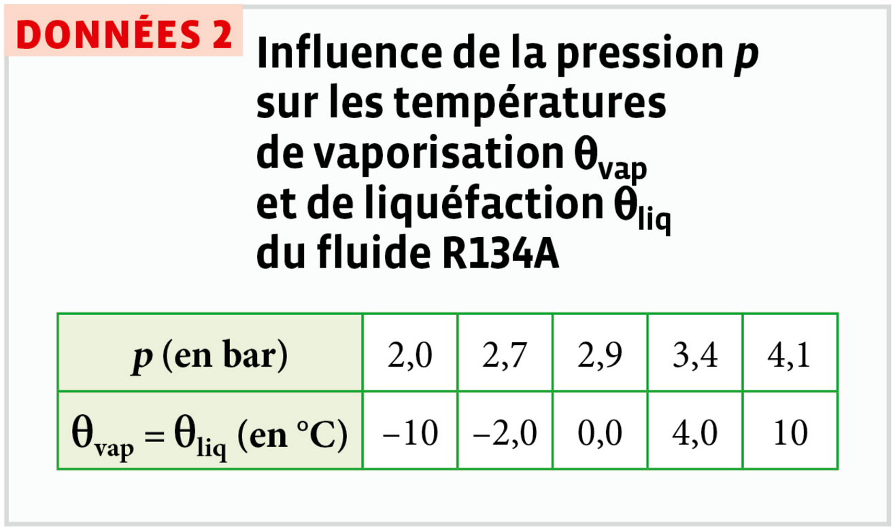
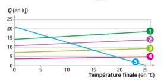
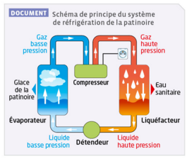
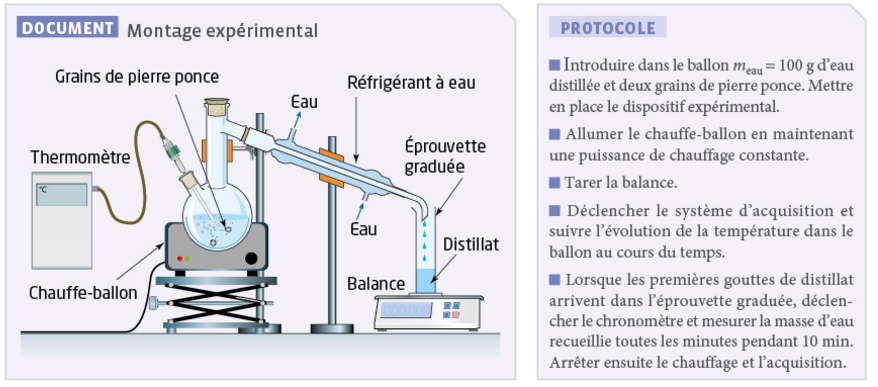

1. Qu'est-ce qu'un changement d'état ?
a. Transformation physique
Une transformation physique a lieu quand une espèce chimique passe d'un état physique (solide, liquide ou gaz) à un autre, sans changer de nature : seules les interactions entre les entités (molécules, atomes, ions) sont modifiées.
Un changement d'état est modélisé par une équation de changement d'état, écriture symbolique à l'échelle macroscopique :
Une élévation de température entraîne une agitation plus grande des entités, et inversement.
Modélisation moléculaire des 3 états
SOLIDE
LIQUIDE
GAZ
Les 6 changements d'état
Glisse chaque étiquette sur la flèche correspondante ✦
Application 1
2. Distinguer fusion et dissolution
a. Deux transformations physiques à ne pas confondre
- Fusion : changement d'état solide → liquide (S → L). L'espèce reste seule, ses entités se réorganisent simplement sous l'effet de la température.
- Dissolution : transformation physique solide → aqueux (S → aq), où les entités de l'espèce dissoute se dispersent et s'entourent de molécules d'eau (elles ne changent pas d'état au sens strict, elles se mélangent à l'eau).

Application 2
Application 3: Fusion ou dissolution ?
Pour chaque situation, indique s'il s'agit d'une fusion ou d'une dissolution.
3. Corps pur et palier de température
a. Changement d'état d'un corps pur
Les changements d'état d'un corps pur s'effectuent à température constante, sous une pression donnée. Les deux états coexistent pendant tout le changement d'état.

Application 4
4. Transfert thermique : endothermique ou exothermique ?
a. Le transfert thermique Q
Le transfert thermique Q est l'énergie échangée sous forme de chaleur par une espèce chimique. Il s'exprime en joule (J).
- Si l'espèce reçoit de l'énergie par transfert thermique : Q > 0, le milieu extérieur se refroidit (son énergie diminue) → transformation endothermique.
- Si l'espèce libère de l'énergie par transfert thermique : Q < 0, le milieu extérieur se réchauffe (son énergie augmente) → transformation exothermique.
🌡️↑ ENDOTHERMIQUE
L'espèce capte de l'énergie. C'est le cas de la fusion, de la vaporisation et de la sublimation.

Lorsqu'on transpire, la sueur (eau liquide) présente sur la peau s'évapore (vaporisation). Cette transformation est endothermique : elle capte de l'énergie thermique au corps, ce qui procure une sensation de fraîcheur.
🌡️↓ EXOTHERMIQUE
L'espèce libère de l'énergie. C'est le cas de la solidification, de la liquéfaction et de la condensation.

Lors des nuits de gel, certains viticulteurs aspergent leurs vignes d'eau. En se solidifiant sur les bourgeons, l'eau libère de l'énergie thermique (transformation exothermique), ce qui limite la baisse de température et protège la plante du gel.
Application 5
Application 6: Endothermique ou exothermique ?
Classe chacun des 6 changements d'état.
5. Énergie massique de changement d'état
a. La relation Q = m × L
Le transfert thermique Q mis en jeu lors d'un changement d'état est lié à la masse m de l'espèce chimique qui change d'état et à l'énergie massique de changement d'état L (aussi appelée chaleur latente) de l'espèce considérée.
m : masse de l'espèce chimique ayant subi l'échange (en kg)
L : énergie massique de changement d'état, ou chaleur latente (en J·kg⁻¹)
L dépend de l'espèce chimique et du changement d'état considéré : elle correspond à la quantité d'énergie nécessaire pour qu'1 kg de l'espèce change d'état, sous une pression donnée.
Pour une transformation endothermique, Q et L sont positifs. Pour une transformation exothermique, Q et L sont négatifs.
| Espèce chimique | Lfus (J·kg⁻¹) à P normal | Lvap (J·kg⁻¹) à P normal |
|---|---|---|
| Dioxygène | 1,4 × 10⁴ | 2,1 × 10⁵ |
| Eau | 3,3 × 10⁵ | 2,3 × 10⁶ |
| Carbone diamant | 8,8 × 10⁶ | 6,0 × 10⁷ |
| Éthanol | 1,1 × 10⁵ | 8,6 × 10⁵ |
Exercice guidé
Application 7
Donnée : Lfusion(NaCl) = 481 × 10³ J·kg⁻¹.
Application 8
Données :
• Lvaporisation(acide acétique) = 395 kJ·kg⁻¹
• Lsolidification(acide acétique) = −195,5 kJ·kg⁻¹
• Masse volumique de l'acide acétique : ρ = 1,049 g·mL⁻¹
Activité 1 — Les changements d'état sont partout
Quels changements d'état ont lieu dans la vie courante ?

Activité 2 — Le dioxygène dans tous ses états
Comment représenter, à l'échelle microscopique, les trois états physiques de cette espèce chimique, ainsi qu'une solution aqueuse la contenant ?


Activité 3 — Fonctionnement d'une pompe à chaleur
Quels changements d'état interviennent dans le fonctionnement d'une pompe à chaleur ?



– dans le liquéfacteur ;
– dans l'évaporateur.
– si la vaporisation du fluide R134A est une transformation endothermique ou exothermique ;
– si la liquéfaction du fluide R134A est une transformation endothermique ou exothermique.
Activité 4 — Modéliser les états de la matière avec PhET
Comment le comportement des entités à l'échelle microscopique permet-il d'expliquer les propriétés de chaque état de la matière ?
Simulation interactive PhET — ouvrir en plein écran ↗
- Dans l'onglet États, choisir une espèce chimique (néon, argon, eau ou une molécule modélisée).
- Placer le réglage de température au minimum et observer la disposition et le mouvement des entités.
- Augmenter progressivement la température : noter, pour chaque état rencontré (solide → liquide → gaz), comment évoluent la disposition et la mobilité des entités.
- À température fixée, réduire le volume disponible (compression) et observer l'effet sur l'état de la matière.
- Répondre au QCM ci-dessous à partir de tes observations.
19. Identifier un changement d'état
📝 QCM26. Caractériser un changement d'état
📝 QCM27. Caractériser un transfert thermique
📝 QCM39. Fonte des glaciers
🧮 CalculDonnées : 1 ha = 1 hectare = 10⁴ m² ; énergie massique de fusion de la glace : Lfus = 334 kJ·kg⁻¹ ; masse volumique de la glace ρglace = 9,2 × 10² kg·m⁻³.
40. Asepsie d'un bloc opératoire
🧮 CalculLes bionettoyeurs vapeur couramment utilisés dans les hôpitaux ont une puissance 𝒫 = 2 800 W, c'est-à-dire qu'ils convertissent une énergie Q = 2 800 joules chaque seconde.
Données pour l'eau :
| Pression (bar) | Température de vaporisation (°C) | Énergie massique de vaporisation (kJ·kg⁻¹) |
|---|---|---|
| 1 | 99,6 | 2 267 |
| 3 | 134 | 2 162 |
| 5 | 152 | 2 107 |
| 7 | 165 | 2 065 |
| 10 | 180 | 2 015 |
43. Rafraîchir une boisson
🧮 CalculDonnées
On note θf la température finale de l'eau dans le verre. Un modèle simplifié permet d'établir la relation entre l'énergie reçue par transfert thermique par les glaçons, notée QG (en kJ), et la masse mG (en kg) de la manière suivante :
- si θf < 0 °C et qu'il reste des glaçons, alors : QG = 2,10 × mG × (θf + 10) ;
- si θf = 0 °C et que les glaçons sont totalement fondus, alors : QG = mG × 355 ;
- si θf > 0 °C, alors : QG = mG × (355 + 4,18 × θf).
De la même manière, l'énergie notée QE (en kJ), cédée par l'eau liquide par transfert thermique, s'exprime ainsi dans le cas où mE = 200 g :
- si θf > 0 °C, alors : QE = 20,9 − 0,837 × θf.

b. Fusion (passage de l'état solide à l'état liquide).
c. Les glaçons reçoivent de l'énergie thermique, l'eau liquide en cède : le transfert va spontanément du corps le plus chaud (l'eau) vers le corps le plus froid (les glaçons).
2.a. Trois cas sont distingués car l'état physique des glaçons évolue au cours du processus : solide qui se réchauffe (θf<0°C), palier de fusion (θf=0°C), puis liquide issu de la fonte qui se réchauffe (θf>0°C). Chaque étape suit une loi physique différente, d'où des expressions différentes de QG.
b. Le coefficient devant θf dans QE = 20,9 − 0,837×θf est négatif (−0,837), donc QE est bien une fonction décroissante de θf. Ce n'est pas surprenant : plus θf est proche de la température initiale de l'eau (25 °C), moins l'eau s'est refroidie, donc moins elle a cédé d'énergie.
c. Le coefficient devant θf dans QG = mG×(355+4,18×θf) est positif, donc QG est une fonction croissante de θf — sens inverse de QE. Logique : plus θf est élevé, plus l'eau issue de la fonte des glaçons a dû être réchauffée, donc plus les glaçons ont reçu d'énergie.
3.a. Courbe 5 : QE (seule courbe décroissante, cohérente avec le coefficient négatif ; elle part de 20,9 kJ et s'annule vers 25 °C). Courbes 1 à 4 : QG, croissantes, classées par valeur à θf=0°C = 355×mG : courbe 1 = 40 g (14,2 kJ), courbe 2 = 30 g (10,65 kJ), courbe 3 = 20 g (7,1 kJ), courbe 4 = 10 g (3,55 kJ).
41. Dégivrage
🧮 CalculCe fil est un conducteur ohmique : il convertit intégralement l'énergie électrique qu'il reçoit en transfert thermique d'énergie. Pour un dipôle, l'intensité du courant I qui le traverse, la résistance R et la tension U à ses bornes sont liées par la loi d'Ohm : U = R × I.
Données :
- pour un véhicule familial standard : R = 1,5 Ω et U = 12 V ;
- pendant une durée notée Δt, l'énergie électrique consommée par le fil est 𝓔 = U × I × Δt, avec U la tension à ses bornes et I l'intensité du courant qui le traverse ;
- énergie massique de fusion de l'eau : Lfus = 334 kJ·kg⁻¹ ;
- masse volumique de la glace : ρglace = 9,2 × 10² kg·m⁻³ ;
- aire de la lunette arrière : A = 1,0 m² ;
- épaisseur d'une couche de givre : e = 2,0 mm.
c2. Endothermique (le givre reçoit de l'énergie pour fondre).
c3. Le conducteur ohmique cède de l'énergie thermique, le givre en reçoit.
d. Énergie pour faire fondre le givre :
45. Performance énergétique d'une patinoire
🧮 CalculLe système de réfrigération de la patinoire contient un fluide frigorigène, l'ammoniac (NH₃), qui circule en circuit fermé et subit plusieurs changements d'état. Grâce à ce système, une partie de l'énergie échangée par transfert thermique pour maintenir la couche de glace à la température adéquate est récupérée pour assurer le chauffage de l'enceinte et de l'eau sanitaire.

Données
Coefficient de performance (COP) : pour évaluer l'efficacité d'un système de réfrigération, on utilise le coefficient de performance (COP), défini comme le rapport entre l'énergie utile Q et l'énergie (essentiellement électrique) We consommée :
- Masse volumique de la glace : ρglace = 9,2 × 10² kg·m⁻³.
- Énergie massique de changement d'état : ℓ = 334 kJ·kg⁻¹.
- L'énergie 𝓔 échangée pendant une durée Δt est reliée à la puissance 𝒫 par l'expression : 𝓔 = 𝒫 × Δt (avec 𝒫 en W ; 𝓔 en J ; Δt en s).
b. Endothermique.
c. La glace de la patinoire.
d. La glace cède de l'énergie thermique, l'ammoniac en reçoit — c'est ce qui permet de refroidir et de maintenir la glace.
2.a. Liquéfaction.
b. Exothermique.
c. L'énergie cédée par l'ammoniac lors de sa liquéfaction est récupérée pour chauffer l'eau sanitaire (et l'enceinte) : c'est une valorisation énergétique qui évite de gaspiller cette chaleur.
3.a. Volume et masse de glace :
46. Détermination de l'énergie massique de vaporisation de l'eau
🧪 TP
Protocole
- Introduire dans le ballon meau = 100 g d'eau distillée et deux grains de pierre ponce. Mettre en place le dispositif expérimental.
- Allumer le chauffe-ballon en maintenant une puissance de chauffage constante.
- Tarer la balance.
- Déclencher le système d'acquisition et suivre l'évolution de la température dans le ballon au cours du temps.
- Lorsque les premières gouttes de distillat arrivent dans l'éprouvette graduée, déclencher le chronomètre et mesurer la masse d'eau recueillie toutes les minutes pendant 10 min. Arrêter ensuite le chauffage et l'acquisition.
Données
Puissance du système de chauffage : la puissance 𝒫 du système de chauffage est déterminée en mesurant la variation de température Δθ de l'eau de masse meau pendant une durée Δt :
Énergie reçue par l'eau lors de la vaporisation : pour un système de chauffage de puissance 𝒫, l'énergie Q reçue par l'eau pendant une durée Δt est :
On note m la masse d'eau qui a changé d'état pendant Δt.
Ce TP repose sur des mesures expérimentales : il n'existe pas de valeur numérique unique attendue. La correction ci-dessous détaille la méthode à suivre pour chaque question.
1.a. La courbe θ(t) doit montrer une montée en température quasi linéaire (l'eau se réchauffe), puis un palier à 100 °C (température de vaporisation de l'eau à pression atmosphérique) pendant toute la durée de la vaporisation.b. Lire sur la courbe l'instant t₁ où θ = 70 °C et l'instant t₂ où θ = 90 °C, puis calculer Δt = t₂ − t₁.
c. 𝒫 = 4 180 × meau × Δθ/Δt, avec meau = 0,100 kg, Δθ = 20 °C, et le Δt (en s) mesuré à la question b. La valeur numérique de 𝒫 dépend directement de votre Δt expérimental.
2.a. Pour chaque minute, noter la masse m d'eau recueillie dans l'éprouvette, et calculer l'énergie Q reçue depuis le début de la vaporisation avec Q = 𝒫 × Δt (Δt = durée écoulée en secondes depuis le début de cette phase). Le graphique Q = f(m) doit faire apparaître des points globalement alignés sur une droite passant par l'origine.
b. Le coefficient directeur de la droite Q = f(m) donne ℓexp (car Q = ℓ × m). Calculer ensuite l'écart relatif avec la valeur de référence :
🔓 Escape Game — Transformations physiques : la centrale thermique en crise — ouvrir en plein écran ↗
Bilan & Ressources
Changements d'état
- 6 changements d'état : fusion, solidification, vaporisation, liquéfaction, sublimation, condensation
- Équation de changement d'état, ex : NaCl(s) → NaCl(ℓ)
Fusion vs dissolution
- Fusion : changement d'état physique de l'espèce elle-même
- Dissolution : dispersion dans un solvant, sans changement d'état
Corps pur & palier
- Changement d'état d'un corps pur à température constante (palier)
- Les deux états coexistent pendant tout le changement d'état
Transfert thermique
- Endothermique : le système capte de l'énergie (Q > 0)
- Exothermique : le système libère de l'énergie (Q < 0)
Énergie massique
- Q = m × L
- m en kg, L en J·kg⁻¹ (énergie massique / chaleur latente), Q en J
Schéma bilan à compléter
Clique sur chaque case pour révéler la réponse.
Propriétés des entités dans chaque état
- Agitation thermique
- Mouvement (vibration, déplacement) des entités d'un système, d'autant plus important que la température est élevée.
- Chaleur
- Terme courant désignant le transfert thermique Q, énergie échangée entre deux systèmes de températures différentes (en J). À ne pas confondre avec la température.
- Chaleur latente
- Autre nom de l'énergie massique de changement d'état L (en J·kg⁻¹) : quantité d'énergie à apporter ou à retirer, par kg de matière, pour un changement d'état donné.
- Corps pur
- Espèce chimique constituée d'une seule sorte d'entités (atomes, molécules ou ions), sans mélange avec d'autres espèces. Un corps pur change d'état à température constante, à pression donnée.
- Endothermique / exothermique
- Une transformation endothermique capte de l'énergie (transfert thermique Q > 0) ; une transformation exothermique en libère (Q < 0).
- Énergie libérée / captée
- Lors d'une transformation exothermique, le système libère de l'énergie vers l'extérieur (Q < 0) ; lors d'une transformation endothermique, il capte de l'énergie (Q > 0).
- Énergie thermique de changement d'état
- Notée Q, formule : Q = m × L. Q : transfert thermique lors du changement d'état (en J) ; m : masse de l'espèce (en kg) ; L : énergie massique de changement d'état (en J·kg⁻¹).
- Équation de changement d'état
- Écriture symbolique d'un changement d'état, précisant l'état initial et l'état final entre parenthèses : ex. NaCl(s) → NaCl(ℓ) pour une fusion.
- Fusion vs dissolution
- La fusion est un changement d'état physique de l'espèce elle-même. La dissolution est différente : l'espèce se disperse dans un solvant sans changer d'état.
- Palier de changement d'état
- Un corps pur change d'état à température constante : sa température reste stable tant que le changement d'état n'est pas terminé.
- Température
- Grandeur liée à l'agitation des entités d'un système (plus l'agitation est grande, plus la température est élevée) ; se mesure en °C ou K, à ne pas confondre avec la chaleur (Q, en J).
- Transformation physique
- Change l'état d'une espèce chimique (solide, liquide, gaz) sans changer sa nature : fusion, vaporisation, sublimation et leurs transformations inverses.
🎬 Changement d'état et énergie (exothermique, endothermique)
Paul Olivier · 4 min 52
🎬 Transformations endothermiques et exothermiques
Florence Raffin · 4 min 19